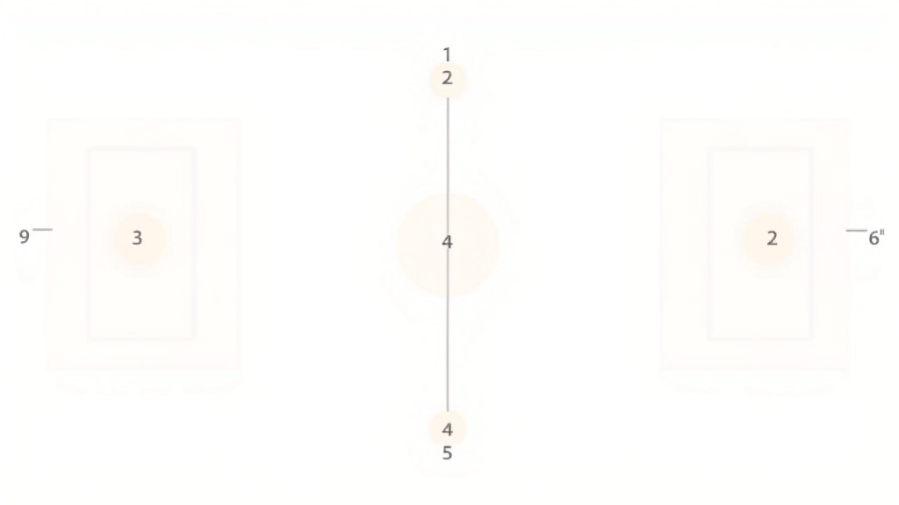

أخطاء الدوران الشائعة وكيفية تجنبها
التعرف على الأخطاء التي يرتكبها اللاعبون في نظام الدوران وكيفية تصحيحها بسرعة والحفاظ على سير اللعبة بشكل صحيح.
اقرأ المزيدشرح مفصل لكيفية تحرك اللاعبين حول الملعب بعد كل نقطة. تعلم المواقع الست والترتيب الصحيح لضمان اللعب القانوني والحفاظ على التوازن الاستراتيجي للفريق.

الدوران في الكرة الطائرة ليس خيارًا — إنه قانون أساسي. عندما يفوز فريقك بنقطة من الخصم، يجب على كل لاعب أن يتحرك موقعًا واحدًا في اتجاه عقارب الساعة. هذا يضمن العدالة والتناسق في التناوب على المواقع المختلفة.
لماذا هذا مهم؟ لأن كل موقع على الملعب له متطلبات مختلفة. موقع الشبكة يتطلب قفزات عالية وهجومًا قويًا. الخط الخلفي يحتاج دفاعًا سريعًا وحذاقة في التمرير. بدون نظام دوران منظم، لا يمكن للفريق أن يعمل بكفاءة.
كل ملعب كرة طائرة مقسم إلى ستة مواقع، وكل موقع له رقم ودور محدد. نبدأ من الشبكة على اليمين (الموقع 1) ونتحرك عكس اتجاه عقارب الساعة.
ضارب أمامي، مسؤول عن الهجوم من الشبكة.
محجوز غالبًا للاعب طويل القامة، يوفر دعمًا أماميًا متوسطًا.
ضارب أمامي آخر، يوازي الموقع 1 لكن على الجانب الآخر.
مدافع خلفي، يغطي الجزء الأيسر من الملعب.
الليبيرو أو مدافع قوي، يتحكم بمركز الدفاع.
مدافع خلفي، يحمي الجانب الأيمن من الملعب.

هذا المحتوى تعليمي بهدف شرح قواعد الكرة الطائرة. قوانين اللعبة قد تختلف قليلًا بين المستويات المختلفة والاتحادات الرياضية. تأكد دائمًا من الرجوع إلى القوانين الرسمية للاتحاد الدولي للكرة الطائرة (FIVB) أو الاتحاد المحلي قبل المشاركة في مباريات رسمية.
دعنا نتخيل مشهدًا حقيقيًا. الفريق الأول يخدم الكرة. الفريق الثاني يستقبل ويمرر ثم يهاجم. لاعب من الفريق الأول يوقف الهجوم ويفوز بنقطة. الآن يجب على الفريق الثاني أن يدور.
كل لاعب ينتقل موقعًا واحدًا في اتجاه عقارب الساعة. اللاعب الذي كان في الموقع 1 ينتقل إلى الموقع 6. الذي كان في الموقع 6 ينتقل إلى الموقع 5. وهكذا دواليك حتى ننتهي. اللاعب الذي كان في الموقع 2 ينتقل إلى الموقع 1، وهو الآن المسؤول عن الخدمة.
الفريق يفوز بنقطة من الخصم
كل لاعب يتحرك موقعًا واحدًا عكس اتجاه عقارب الساعة
اللاعب الجديد في الموقع 1 يصبح الخادم
اللعبة تستمر بالتشكيل الجديد
اكتشف المزيد عن قواعد الكرة الطائرة والاستراتيجيات
التعرف على الأخطاء التي يرتكبها اللاعبون في نظام الدوران وكيفية تصحيحها بسرعة والحفاظ على سير اللعبة بشكل صحيح.
اقرأ المزيد
دليل شامل حول عملية التبديل، عدد التبديلات المسموحة، والإجراءات القانونية لتبديل اللاعبين أثناء المباراة.
اقرأ المزيد
تعمق في الاستراتيجيات المتقدمة التي تستخدمها الفرق المحترفة لتحسين الدوران والاستفادة من التبديلات بذكاء.
اقرأ المزيدسواء كنت لاعبًا أو مدربًا أو متفرجًا، فهم الدوران يجعلك تقدّر اللعبة أكثر. تُدرك كم يجب على كل لاعب أن يكون متعدد المواهب. اللاعب الذي يُتقن موقعًا واحدًا فقط لن ينجح على المدى الطويل.
المدربون يستخدمون فهم الدوران لبناء فرق قوية. يختارون اللاعبين الذين يمكنهم التكيف مع مواقع مختلفة. يُعلمونهم كيفية التحرك بسرعة وبدقة. يُعدّونهم للضغط الحقيقي للمباريات الرسمية.
لا تركز على موقع واحد في البداية. تعلم كل موقع. اقضِ وقتًا في كل منطقة من الملعب. ستفهم بعد ذلك أين تناسبك أكثر. هذا الفهم الشامل سيحسّن لعبتك بشكل كبير.

كاتب المقالة
فريق التحرير والمراجعة
كتبه فريق الدوران الذهبي التحريري، مركزين على تقديم شروحات عملية وسهلة المتابعة لقواعد الكرة الطائرة. نؤمن بأن كل شخص يستحق أن يفهم اللعبة بعمق.
نظام الدوران ليس معقدًا كما قد يبدو للوهلة الأولى. إنه قانون بسيط وعادل يضمن أن كل لاعب يحصل على فرصة في كل موقع. تذكر: ستة مواقع، دوران عكس اتجاه عقارب الساعة، وحركة بعد كل نقطة تفوز بها.
مع الممارسة، ستصبح هذه الحركات تلقائية. لن تفكر فيها — ستشعر بها فقط. هذا هو الوقت الذي تبدأ فيه باللعب بحقيقة. لذا استمر في التدريب، استمع إلى مدربك، وتذكر أن كل موقع مهم بنفس القدر.
استكشف المقالات الأخرى في قسم قواعد التبديل والدوران لفهم أعمق للعبة.
اكتشف المزيد